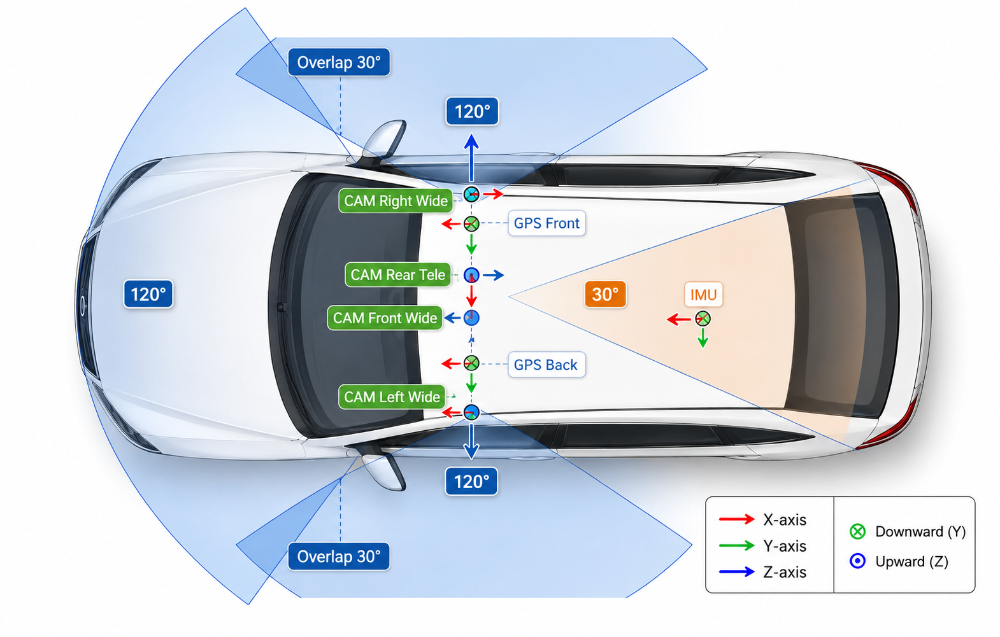

Designed for behavior analysis, safety assessment, and trajectory-aware benchmark construction.
Production Autonomous Vehicle Evaluation
PAVE: An End-to-End Dataset for Production Autonomous Vehicle Evaluation
A real-world autonomous-driving dataset built for system-level evaluation of safety, behavior, and trajectory quality beyond perception-only benchmarks.
KITE Lab, The Hong Kong University of Science and Technology (Guangzhou)
Overview
Abstract
Existing datasets such as KITTI, nuScenes, Waymo, Argoverse, nuPlan, and Zenseact Open Dataset mainly support perception tasks and are largely collected from manually driven vehicles. PAVE closes this gap with real-world logs captured under identified autonomous-driving mode, enabling holistic evaluation of driving behavior, safety events, and trajectory quality with synchronized sensors and high-precision localization.
The public subset combines synchronized multi-view imagery, GNSS/IMU traces, and structured scenario metadata.
Released for research, reproducible experiments, and scientific publication under the PAVE academic license.
Sensors
Sensor Setup

Vehicles
Production AVs in PAVE


Video
Project Video
Comparison
Dataset Comparison
This table compares representative autonomous driving datasets across perception, motion, and end-to-end categories. Notably, PAVE uniquely provides explicitly labeled autonomous driving mode data, enabling direct analysis of real-world AV behavior.
| Category | Dataset | General | Perception | Trajectory | Tasks | ||||||||||
|---|---|---|---|---|---|---|---|---|---|---|---|---|---|---|---|
| Year | Scenes | Size (h) | Veh. models | Driving mode | Locations | Avg. speed | RGB imgs | Ann. frames | Cams | Accuracy | Attitude | Ann. scenarios | Tasks | ||
| Perception | KITTI | 2012 | 22 | 1.5 | 1 | Human | Karlsruhe | 9.7 | 15k | 15k | 4 | 0.02 m | Yes | No | Det.&Track. |
| ZOD (Frame) | 2023 | – | – | – | H + A (unlabeled) | 14x Europe | – | 100k | 100k | 1 | 0.01 m | Yes | No | Det., Seg. | |
| Waymo Perception | 2019 | 1k | 5.5 | 2 | H + A (unlabeled) | 3x USA | 9.76 | 1M | 200k | 5 | – | – | No | Det.&Track. | |
| Motion | Waymo Motion | 2021 | 100k | 570 | 2 | H + A (unlabeled) | 6x USA | 8.3 | N/A | N/A | N/A | – | – | No | Motion Pred. |
| OpenPAV | 2024 | – | – | Multi | H + A (unlabeled) | Multi-source | 3.2-32.2 | N/A | N/A | N/A | 0.01 - 0.1 m | – | No | Motion Pred. | |
| End-to-End | nuScenes | 2019 | 1k | 5.5 | 2 | H + A (unlabeled) | Boston, SG | 5.1 | 1.4M | 40k | 6 | ≤ 0.1 m | Yes | No | Det.&Track. |
| ZOD (Sequences) | 2023 | 1473 | ~8 | – | H + A (unlabeled) | 14x Europe | – | 294k | 1473 | 1 | 0.01 m | Yes | No | Det., Seg. | |
| Waymo E2E | 2025 | 4021 | ~12 | 2 | H + A (unlabeled) | USA | 5.8 | ~5.5M | – | 8 | – | – | No | Motion Plan. | |
| PAVE | 2025 | 32727 | 222.24 | 9 | H + A (labeled) | 7 major cities in China and USA | 9.9 | 130k | 130k | 4 | 0.008 m | Yes | Yes | Det., Eval. Motion Plan. | |
Image Data
Synchronized multi-view images from four cameras for perception and scene understanding.
GNSS / IMU Trajectories
High-precision vehicle trajectories for motion analysis and planning evaluation.
Raw Video Data
Continuous multi-camera recordings exist internally, but are not included in the current public release.
Scenario Labels
Structured attributes describe road type, traffic conditions, lighting, and environmental context.
Scenarios
Scenario Coverage and Structured Annotation Schema
The PAVE dataset provides diverse real-world driving scenarios together with structured scenario-level annotations to support systematic condition-aware analysis, subset construction, and reproducible benchmark evaluation.

Area Type
Values [highway, urban, residential, rural, parking, other]
- highway: expressways, ramps, toll stations, and other high-speed roads.
- urban: city roads with dense intersections and roadside buildings.
- residential: internal roads in campuses, communities, or industrial parks.
- rural: suburban or non-urban segments of national or provincial roads.
- parking: parking lots, garages, or designated parking areas.
- other: uncategorized or mixed cases.
Lighting
Values [day, dusk, dawn, night, night_lit, night_unlit, other]
- day: sufficient natural light, including overcast daytime.
- dusk: evening around sunset.
- dawn: low-light morning before full daylight.
- night: general nighttime conditions.
- night_lit: nighttime with clear artificial illumination.
- night_unlit: nighttime with little roadside lighting.
Weather
Values [clear, cloudy, rain, snow, fog, other]
- clear: stable conditions without precipitation.
- cloudy: overcast conditions with reduced direct sunlight.
- rain: active rainfall or post-rain wet-road conditions.
- snow: snowfall or snow-covered scenes.
- fog: fog, haze, or reduced-visibility atmosphere.
- other: unclear or uncommon weather conditions.
Road Surface
Values [paved, unpaved, other]
- paved: asphalt or concrete roads with typical on-road characteristics.
- unpaved: dirt, gravel, or temporary construction paths.
- other: mixed or unclear surface types.
Driving State
Values [stop, follow, cruise, lane_change, turn, other]
- stop: stationary or nearly stationary at lights or stop lines.
- follow: closely following a leading vehicle.
- cruise: steady lane-keeping without close interaction.
- lane_change: active lane change or boundary crossing.
- turn: turning or traversing a sustained curved path.
- other: insufficient evidence or out-of-schema behaviors.
Highlights
Research-Oriented Release Design
The current public subset is organized to support non-commercial research, method development, and scientific publication around autonomous-vehicle evaluation.
Autonomous-mode Collection
Logs are captured with autonomous driving engaged rather than purely manual operation.
System-level Evaluation
Supports safety and reliability analysis beyond isolated perception metrics.
Trajectory and Behavior Analysis
Structured for AV behavior understanding, trajectory evaluation, and benchmark construction.
Multi-modal Synchronization
Synchronized sensor streams and localization records make temporal alignment first-class.
Privacy-aware Release
Faces and license plates are anonymized to match privacy and compliance requirements.
Benchmark-ready Packaging
Suitable for academic evaluation, reproducible experiments, and future devkit expansion.
Access
Academic Release and Usage Terms
This repository currently releases a selected academic subset for non-commercial research, method development, and scientific publication.
Data Access
Download the released academic subset and browse the project repository.
License Summary
The release is governed by the PAVE Academic Non-Commercial License v1.0.
- Permitted: academic research, scientific investigation, non-commercial benchmarking, theses, and papers.
- Prohibited: commercial use, redistribution, resale, sublicensing, or proprietary deployment.
- Commercial use requires a separate licensing agreement.
Usage Conditions
- Proper citation of the PAVE paper is mandatory.
- Dataset usage alone does not justify co-authorship.
- The release is provided as is, without warranty.
- Violation of license terms results in automatic termination.
Full Dataset & Licensing
For full-dataset access, commercial licenses, industrial evaluation services, or extended annotations and benchmarks:
kema@hkust-gz.edu.cnCitation
Please Cite the Dataset Paper
Citation is a formal requirement for any research output that uses this dataset, even partially.
@inproceedings{li2026pave,
title={PAVE: An end-to-end dataset for production autonomous vehicle evaluation},
author={Li, Xiangyu and Wang, Chen and Liu, Yumao and He, Dengbo and Zhang, Jiahao and Ma, Ke},
booktitle={Proceedings of the IEEE/CVF Conference on Computer Vision and Pattern Recognition},
pages={1010--1018},
year={2026}
}Contact
Dataset Inquiries and Licensing Requests
Please reach out for full dataset access, licensing clarification, extended benchmarks, or industry collaboration around autonomous-vehicle evaluation.